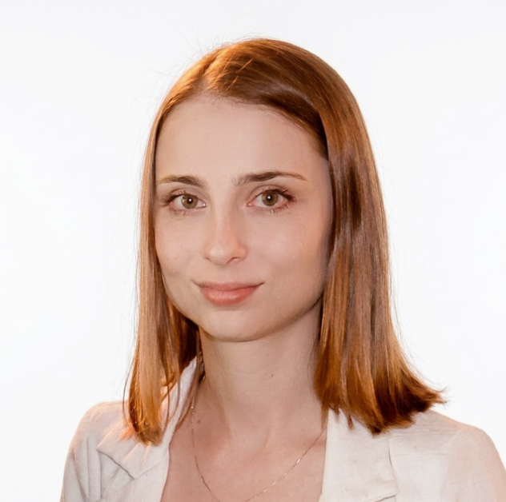
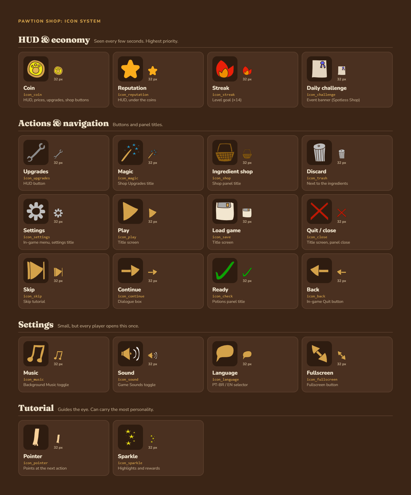

Geovana Holaten — designer portfolio
Selected work
Who I am
A designer who likes the messy middle — research, systems and the small details that make a product feel inevitable. I move comfortably between high-fidelity UI, design systems, brand identity and game interfaces. Based in Stockholm, Sweden.

Selected experience
Education
Let's make
something good.
Based in Stockholm, Sweden — open to on-site, hybrid and remote roles, studio collaborations and freelance. The fastest way to reach me is email.
{{ mailText }}{{ mailCopiedText }}{{ project.title }}
{{ project.tagline }}
{{ project.videoCaption }}
{{ project.systemLabel }}
Overview
{{ project.overview }}
{{ project.overview2 }}
The problem
{{ project.problem }}
Process
{{ a.title }}
UI icon set
I hand-drew 22 UI icons in Affinity to replace placeholder emoji across the game — same ink outline, warm palette and wobbly line as the characters, so menus feel like part of the world instead of a system layer on top of it.

Motion kit — modules
Five reusable modules, each with one job — timing and interaction only, no brand attached. That’s what makes them reusable across campaigns.
{{ m.desc }}
Motion kit — same modules, three campaigns
Nothing here is a new design — it’s the five modules above, retimed and repalletized. Across the three, every module gets used at least once.
Timing: {{ c.note }}
Module usage map
Design rationale
{{ r.title }}{{ r.body }}
In motion
{{ m.desc }}
Before & after
Most of the design work happened in playtesting: I played, wrote down what confused me, and changed the interface until it stopped confusing me.
Design system
{{ project.designSystem.intro }}
{{ nt.title }}
Outcome
{{ project.outcome }}